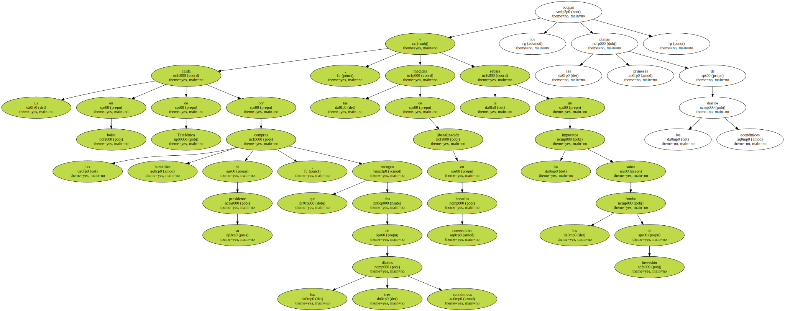
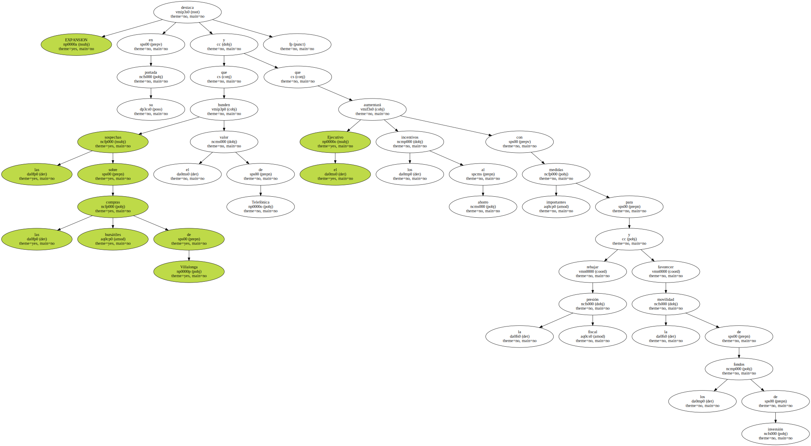
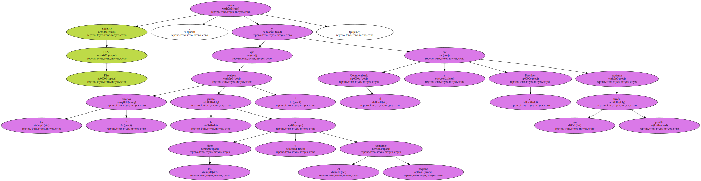
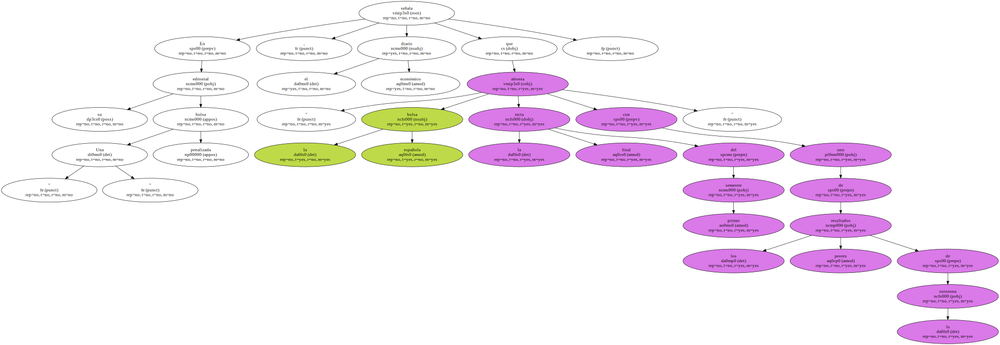
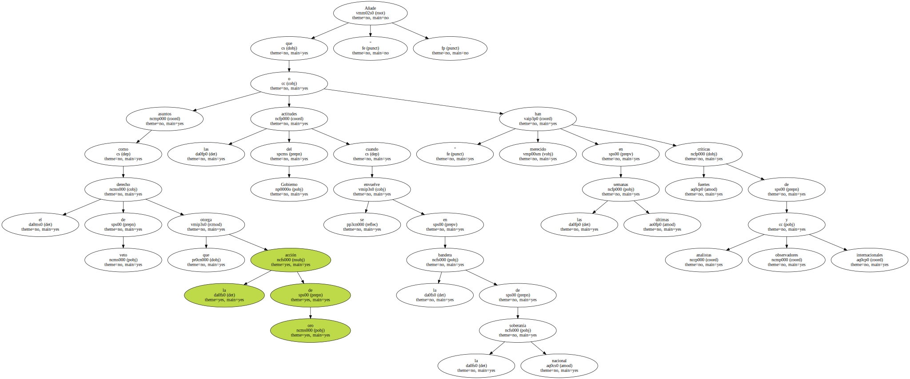
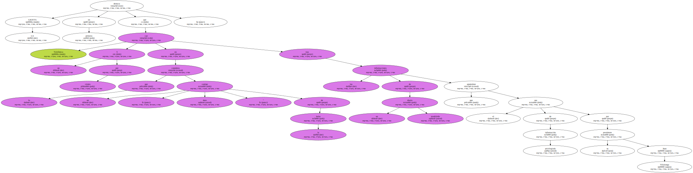
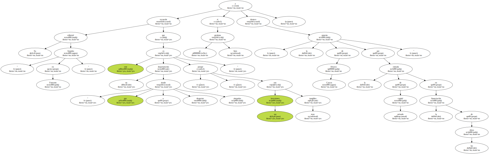

La caída en bolsa de Telefónica por las compras bursátiles de su presidente , que recogen dos de los tres diarios económicos , las medidas de liberalización en horarios comerciales y la rebaja de los impuestos sobre los fondos de inversión ocupan hoy las primeras planas de los diarios económicos.
EXPANSION destaca en su portada que las sospechas sobre las compras bursátiles de Villalonga hunden el valor de Telefónica y que el Ejecutivo aumentará los incentivos al ahorro con importantes medidas para rebajar la presión fiscal y favorecer la movilidad de los fondos de inversión.
En el editorial " Cuando la sanidad es gratis total " , EXPANSION opina que " los bienes o servicios gratuitos suelen tener importantes inconvenientes económicos " y añade que " ni aprecian ni se valoran , se consumen con afán bulímico más que para satisfacer necesidades reales y quienes los proveen carecen de incentivos para mejorar ".

CINCO DIAS Dias , recoge que los " horarios reabren la guerra de los híper y el pequeño comercio " y que el Commerzbank y el Dresdner exploran una posible fusión.
En su editorial " Una bolsa penalizada " , el diario económico señala que " la bolsa española afronta la recta final del primer semestre con uno de los peores resultados de la eurozona ".
Añade que " asuntos como el derecho de veto que otorga la acción de oro o las actitudes del Gobierno cuando se envuelve en la bandera de la soberanía nacional han merecido en las últimas semanas fuertes críticas de analistas y observadores internacionales ".
LA GACETA destaca en primera que Telefónica cae un 5 por ciento en lo que considera un " duro castigo " de la bolsa tras las informaciones de un diario madrileño que apuntaban el uso de información privilegiada por su presidente Juan Villalonga.
Su editorial " Impulso en Fomento " recuerda que este es un departamento " que tiende a despertar simpatías porque , si se gestiona bien , sus inversiones son muy tangibles " y destaca " la apuesta de Alvarez Cascos por la entrada de capital privado en la financiación de las obras ".
